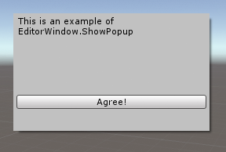

EditorWindow.ShowPopup
public void ShowPopup();
Description 描述
Shows an Editor window using popup-style framing.
This means the window has no frame, and is not draggable. It is intended for showing something like a popup menu within an existing window.

Opening a window using this method will not give it the functionality of a popup window, only the styling. For full popup functionality (eg, auto closing when the window loses focus), use PopupWindow.
using UnityEngine; using UnityEditor;
public class ShowPopupExample : EditorWindow { [MenuItem("Example/ShowPopup Example")] static void Init() { ShowPopupExample window = ScriptableObject.CreateInstance<ShowPopupExample>(); window.position = new Rect(Screen.width / 2, Screen.height / 2, 250, 150); window.ShowPopup(); }
void OnGUI() { EditorGUILayout.LabelField("This is an example of EditorWindow.ShowPopup", EditorStyles.wordWrappedLabel); GUILayout.Space(70); if (GUILayout.Button("Agree!")) this.Close(); } }